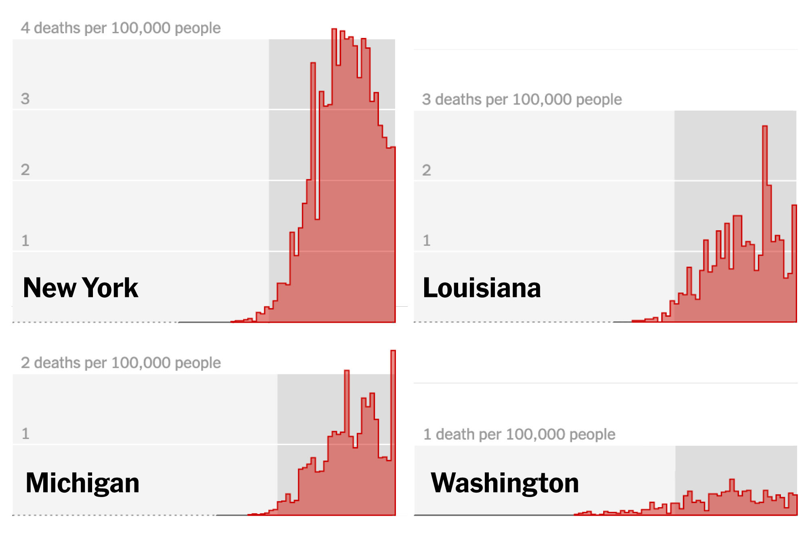

Resilience Story of New York
This is the resilience story of New York State in the face of COVID-19 pandemicNew York Today: The Pandemic
The coronavirus spread in the U.S. since March 2020 had drastically changed the way people live their lives. New York, specifically the NYC is the epicenter of the Pandemic in the U.S. Until May 15, 2020, the confirmed cases in New York State has reached about ..... and .... deaths. Compared to other states, the rapid spread of the virus in NY clearly signaled an urgent call of taking extreme measures, similar to what China and South Korea had done: lockdown and social distancing The independent expert maintained that people in poverty are disproportionately threatened by the coronavirus. “They are more likely to work in jobs with a high risk of exposure, live in crowded and insecure housing, reside in neighbourhoods that are more vulnerable because of air pollution, and lack access to healthcare”, he said.“Communities of colour, who face a persistent racial wealth gap, are at particular risk and are dying at much higher rates.” Additionally, the poor have fewer resources to cushion economic blows and are more susceptible to mass layoffs and pay cuts.
The fines for people not allowing the governor's executive order was between $500 and $ 1,000. The New York Governor stated that people did not take the order serioulsly

People shared their personal stories in the face of the pandemic and asked one to another: "What's Your Quarantine Routine?" Others expressed their feelings through sketches.

396-Year Old New York
New York was once named New Amsterdam, given by the Dutch who colonized this area along the Hudson River in 1624. It is under the reign of British Empire 40 years later that the name turned into New York. The New York State had significant role in American Revolution and long been a magnet for immigrants worldwide to work and reside. New York City is the largest city in the state and a home for nearly 20 million people.

The state has 62 counties which are divided into about 1,500 towns and villages. Compared to other county governments, New Yowk relatively has a stronger governance with many special districts and infrastructures like port, bridge, health, and regional market. The Port Authority is one of the largest special districts operating harbors and related facilities throughout New York City and New Jersey.

Being one of the wealthiest states in the USA does not mean that New York State does not struggle with issue of homelessness and poverty. Leading the nation with the greatest divide between the wealthiest 1 percent of residents and the other 99 percent was New York state, according to the report by the Economic Policy Institute, a left-leaning think tank in Washington, D.C. The average income of the top 1 percent in New York state was $2.2 million in 2015, while the average income of the bottom 99 percent was $49,617. The economy inequity is also associated with ethnicity and race. The map shows the Median household income level throughout the U.S. states in 2020.

Government's Pause Order
On march 22, 2020, Governor Cuomo announced the New York State on PAUSE executive order which consists of 10-point policies to prevent the spread. The maximum fine of the state's pysical distancing protocol is $1,000.

Public Outrage
Citizens of New York State have diffeent responses to this policy. In NYC for instance, a great number of people flocked to parks, disobeying the social distancing order. This raises questions of how the government would enforce the stay-at-home policies. Protests taken place throughout the U.S including NYS, criticizing the government's rule of lockdown as it will create more economic problem and unemployment
 At least nine shootings took place as government released the social distancing and statewide lockdown in March 2020. The incidents have caused at least 4 dead victims and 7 injured
The map shows the distribution of registered guns throughout the U.S. which among other factors, indicates the high potentials of such violence to re-occur during this uncertain time.
At least nine shootings took place as government released the social distancing and statewide lockdown in March 2020. The incidents have caused at least 4 dead victims and 7 injured
The map shows the distribution of registered guns throughout the U.S. which among other factors, indicates the high potentials of such violence to re-occur during this uncertain time.

Solidarity
People are called to volunteer in this difficult and uncertain condition in New York. The map shows some of almost 150 food pantries that voluntarily provides people with free food during the pandemic. Most of the pantries are organized by church and ethnicity-based institutions, and surprisingly, relied on retired seniors. Since they can no longer safely leave their homes, the food pantry and kitchen are today run by young volunteers.

Besides foods, many organizations are now opening their doors to welcome homeless by providing them with shelters, transitional housing and services. These organizations normally required the homeless people to show their ID or proof of residence. One of these organizations is located on Winchester Blvd.